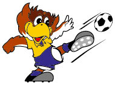

在仙クラブマスコット
ペガッ太

ギリシャ神話で「勝利をもたらす」といわれる鷲をイメージしています。ベガルタ仙台が地域の誇りや夢となり皆さんに愛される「星」になれ！という願いから生まれました。1999年5月2日(ベガッ太の誕生日)、愛称一般公募により「ベガッ太」と命名されました。
クラッチ
英語で「わしづかみ」という意味のクラッチと、勝負強いチームとなりファンの心をわしづかみにするという願いが込められている。
テイナ

性格 ・明るく活発。だけどちょっと気弱な一面があり、強い男の子になりたい。女の子みたいな名前が嫌い。いつかプロバスケット選手になるために日夜努力の日々。
マイビイ

マイナビの「マイ(MY)」とヴィクトリー(勝利)の「V」を掛け合わせ、サポーターのみなさんをはじめとした多くの方々に親しみを持っていただき、呼びやすい名前として「マイビィ」と命名いたしました。